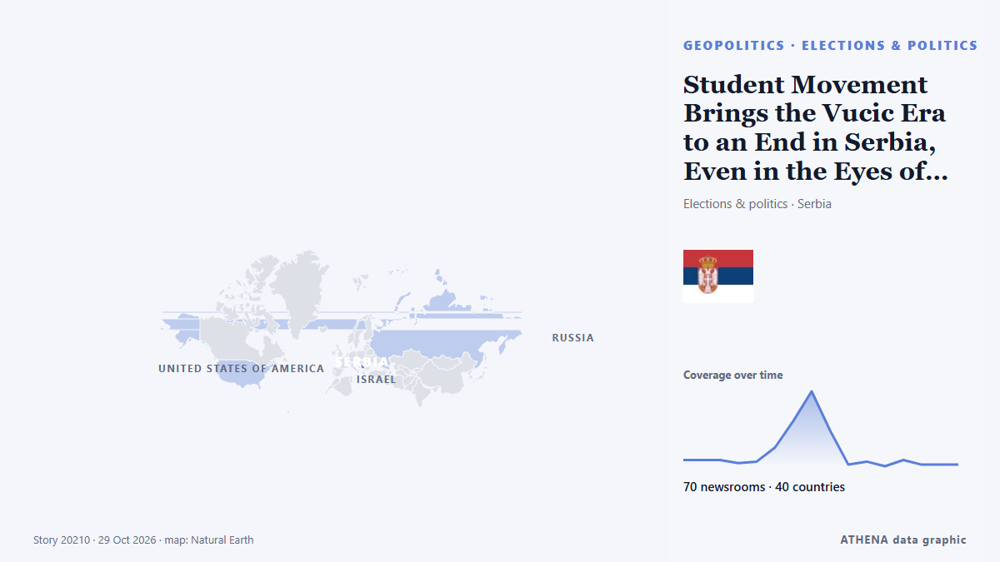

Student Movement Brings the Vucic Era to an End in Serbia, Even in the Eyes of the OSCE and the oiip

Sunday’s vote could reshape the country’s political future. de EUobserver
Informado de forma independiente por 70 medios de 40 países desde el 22 oct; el primero fue The New York Times (World); la cobertura va perdiendo fuerza. ATHENA califica el riesgo como elevado (4.1/10), sobre todo por la gravedad del daño descrito y su alcance geográfico y sectorial. La confianza es del 88 % (alta): lo corroboran 70 medios independientes, con una fiabilidad media de las fuentes del 77 %. Medios por país: Reino Unido (5), Catar (5), Estados Unidos (4). Cobertura: del 22 oct al 25 oct, 81 horas.
Por qué importa: Los hechos de seguridad y diplomacia pueden alterar alianzas, comercio y mercados mucho más allá de los países implicados.
Qué ha cambiado: 3 informaciones nuevas de 3 redacciones en las 24 horas hasta el 29 oct.
Primer titular: Serbia's Aleksandar Vucic concedes defeat to student-backed protest movement in parliamentary vote
Los titulares se muestran en inglés, tal como se publicaron.
De un vistazo
Seleccionado, puntuado y redactado por la metodología publicada de ATHENA. Ningún editor interviene en eventos concretos. Cómo se elabora ›
| 22 Oct 09:01 UTC | 4 |
|---|---|
| 22 Oct 21:01 UTC | 4 |
| 23 Oct 09:01 UTC | 4 |
| 23 Oct 21:01 UTC | 2 |
| 24 Oct 09:01 UTC | 3 |
| 24 Oct 21:01 UTC | 12 |
| 25 Oct 09:01 UTC | 29 |
| 25 Oct 21:01 UTC | 48 |
| 26 Oct 09:01 UTC | 23 |
| 26 Oct 21:01 UTC | 1 |
| 27 Oct 09:01 UTC | 3 |
| 27 Oct 21:01 UTC | 0 |
| 28 Oct 09:01 UTC | 4 |
| 28 Oct 21:01 UTC | 1 |
| 29 Oct 09:01 UTC | 1 |
| 29 Oct 21:01 UTC | 1 |
| 22 Oct 09:09 UTC | 0.0 |
|---|---|
| 22 Oct 19:58 UTC | 1.0 |
| 23 Oct 06:41 UTC | 1.7 |
| 25 Oct 07:17 UTC | 3.2 |
| 25 Oct 22:03 UTC | 3.5 |
| 25 Oct 22:10 UTC | 4.9 |
| 26 Oct 19:30 UTC | 4.3 |
| 29 Oct 21:31 UTC | 4.1 |
Por qué estas cifras
Importancia
Riesgo
Confianza
La cobertura: quién informó y cuándo
titular tal como se publicó · abre el original- The New York Times (World) · Estados UnidosSerbian Election Underscores the Region’s Long Political Limbo
- EUobserver · BélgicaSerbia’s election: can a student-led movement of hope overcome Vučić’s hollowed-out political system?
- BBC News · Reino UnidoWhy a student protest movement is challenging 12 years of Vučić rule in Serbia
- Al Jazeera English · CatarFrom the streets to the ballot box: Serbia’s students hope for election win
- Politico Europe · BélgicaSerbia’s protesting students mount serious challenge to Vučić’s power
- The Guardian · Reino UnidoFriday briefing: How a leaderless student group is challenging power in Serbia
- Kurdistan24 (English) · IrakSerbian Students Challenge Ruling Party in Snap Parliamentary Election
- Novinite · BulgariaSerbia’s Student Opposition Holds Final Rally Before Parliamentary Vote
- Al Jazeera English · CatarSerbia’s snap election: What’s at stake and can students unseat Vucic?
- RFI English · FranciaStudent-led movement seeks to unseat ruling party in Serbian election
- DW English · AlemaniaSerbia: Hope, tension and apprehension as voters prepare to elect new parliament
- Meduza (English) · RusiaCan Serbia’s student protesters stop Aleksandar Vučić from becoming prime minister? The country’s longtime leader has called an early election to extend his hold on power.
- BBC News · Reino UnidoStudent movement takes Serbia's Vučić to the wire in neck-and-neck election
- Haaretz (English) · IsraelNetanyahu's Serbian ally also faces a tough election this week. What's at stake for Israel?
- NPR World · Estados UnidosEuropean student protests take aim at Serbia's elections
- Al Jazeera English · CatarSerbia elections test student movement demanding justice for 16 victims
- Türkiye Today · TurquíaVucic or the students? Serbia faces a vote neither side expects to lose
- The Straits Times · SingapurSerbia votes in historic election as students seek to end Vucic's long grip on power
- The New York Times (World) · Estados UnidosWhat to Know as Serbia Votes for a New Parliament
- Al Jazeera English · CatarSerbia votes in election pitting longtime leader against student movement
- Business Recorder · PakistánSerbia votes as students seek to unseat Vucic in snap election
- DW English · AlemaniaSerbia election: Student-led opposition ends Aleksandar Vucic's grip on power
- France 24 English · FranciaSerbia holds parliamentary election as populist leader Vucic faces student movement
- ABC News (International) · Estados UnidosSerbia’s strongman leader Vucic concedes defeat to student-led movement in seismic political shift
- Sky News (World) · Reino UnidoSerbia's pro-Russian leader urges supporters to avoid 'killings' after defeat
- Cyprus Mail · ChipreSerbia votes as students seek to unseat Vucic in snap election
- Bangkok Post — page reader · TailandiaSerbia votes with ruling party facing ascendant student movement
- RFE/RL (English) · INTVucic Concedes Defeat In Pivotal Serbian Parliamentary Election
- Kyiv Post · UcraniaSerbia Votes as Student Movement Mounts Major Challenge to Vučić
- The Jerusalem Post · IsraelVucic's mission: Can Serbia's longtime leader secure new mandate? - analysis
- DW English · AlemaniaSerbia's Aleksandar Vucic concedes defeat to student-backed protest movement in parliamentary vote
- Türkiye Today · TurquíaSerbians head to polls as student movement targets Vucic’s party
- Novinite · BulgariaElection fever grips Serbia. People have been waiting in lines since morning
- Novinite · BulgariaVucic waits an hour and a half to vote in Serbian parliamentary elections
- to vima · GreciaSerbia Votes As Student Movement Challenges Vucic’s Rule
- Al Jazeera English · CatarSerbia votes as student-led bloc challenges longtime leader Vucic
- RFI English · FranciaHigh turnout in Serbia as student movement takes on Vucic at the polls
- RTÉ News · IrlandaVucic concedes defeat in Serbian parliamentary elections
- The Guardian · Reino Unido‘Door to EU is open’ new Serbian government told after Vučić concedes election – Europe live as it happened
- Helsinki Times · FinlandiaSerbia votes in parliamentary election as student movement challenges Vučić